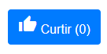
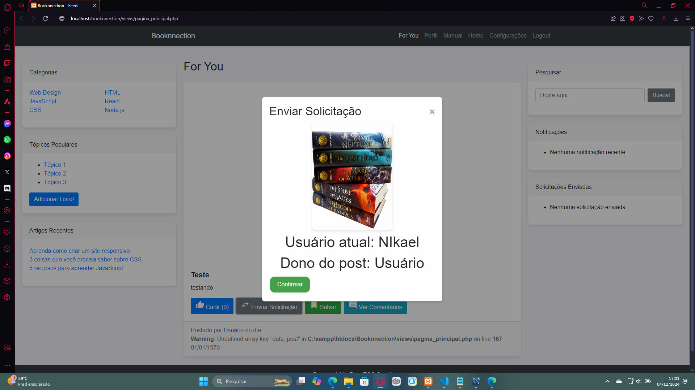
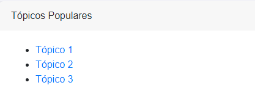
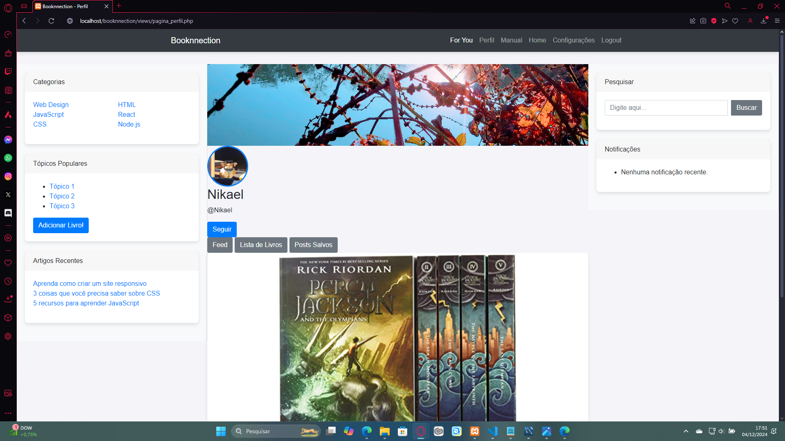
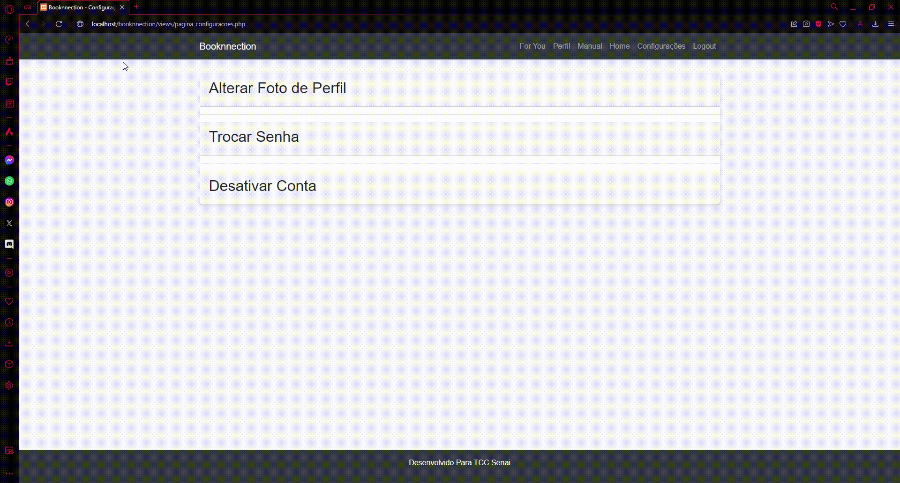
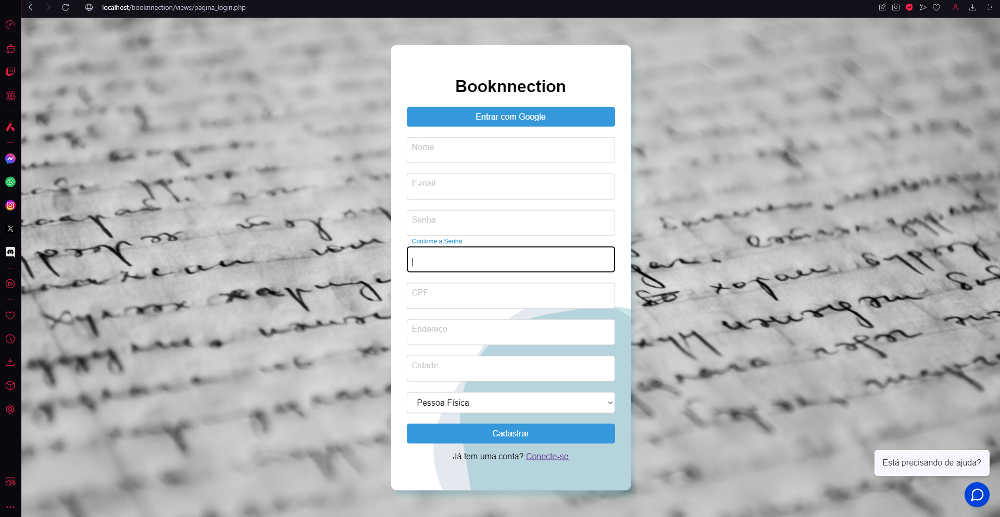

home Bem-vindo ao Booknnection
O Booknnection é uma plataforma inovadora que conecta leitores, permitindo a troca de livros, a criação de postagens e interações sociais em uma comunidade literária. O sistema oferece opções de pesquisa personalizadas para facilitar o compartilhamento de experiências literárias e o acesso a novas leituras. Com páginas de fácil entendimento e recursos de navegação simplificados, o Booknnection foi projetado para transformar a forma como nos conectamos com livros e leitores.

assignment Objetivo do Sistema
O principal objetivo do Booknnection é criar um ambiente onde leitores possam compartilhar, trocar e explorar novos livros de forma colaborativa e acessível. Além de facilitar o acesso a conteúdos literários, o sistema promove a sustentabilidade através da reutilização de livros, incentivando o compartilhamento e a economia circular. Com funcionalidades como filtros por gênero literário, o Booknnection oferece uma boa experiência para cada usuário.
people Público-Alvo
O Booknnection é direcionado a leitores de todas as idades, desde estudantes que desejam expandir seu conhecimento até colecionadores que buscam obras raras. A interface foi projetada para garantir a facilidade de uso, atendendo tanto usuários iniciantes quanto experientes em tecnologia.
support_agent Contatos de Suporte
Caso encontre dificuldades, nossa equipe de suporte está disponível para ajudar. Envie suas dúvidas, sugestões ou relatórios de erros para o e-mail: suporte@booknnection.com, além disso, nos acompanhe nas redes sociais: Facebook, Instagram
rss_feed Feed de Postagens

O Feed de Postagens apresenta conteúdos compartilhados por outros usuários em um formato visual limpo e organizado. Nele, é possível interagir com as postagens de diversas maneiras, como curtindo, comentando e salvando livros que despertarem seu interesse. O feed é atualizado dinamicamente e pode ser filtrado com base em interesses específicos, como gênero literário.
Cada postagem inclui:
- Imagem do Livro: A capa do livro para facilitar a identificação.
- Botão Curtir: Permite adicionar um "like" ao post, indicando que você gostou.

- Botão Enviar Solicitação: Envia um pedido para trocar livros com o dono da postagem.

- Botão Salvar: Adiciona a postagem à sua lista de posts salvos, acessível na página de perfil.

- Botão Ver Comentários: Redireciona para a página de comentários do post.

Ao clicar em "Enviar Solicitação", uma aba será exibida com a opção de confirmar a troca. Nesse processo, o sistema realiza uma requisição para verificar se o outro usuário está interessado na troca. Depois de enviar uma solicitação, um campo à direita da tela exibirá o pedido. Ao clicar nele, você será redirecionado para a página de troca. Nessa página, é possível:
- Escolher um livro de oferta no campo exibido abaixo da imagem.
- Entrar em contato com o outro usuário via WhatsApp, facilitando a comunicação e agilizando o processo.

A funcionalidade de "Ver Comentários" redireciona para a página específica do post, onde é possível interagir com outros usuários. Para comentar, clique no botão "Adicionar Comentário", digite sua mensagem no campo exibido e confirme ao pressionar o botão "Comentar".

trending_up Tópicos Populares
A seção Tópicos Populares exibe os gêneros de livros mais procurados e trocados no sistema.

person Página de Perfil
Na Página de Perfil, o usuário pode visualizar e gerenciar suas listas de livros cadastrados e posts salvos. A interface intuitiva permite:
- Visualização de livros: visualize todas as suas listas de livros cadastrados.
- Gerenciamento de Atividades: controle a criação de posts e os seus posts salvos.
A seção de feed no perfil exibe todas as postagens criadas pelo usuário que ainda estão ativas.

library_books Funcionalidades da Lista de Livros
A Lista de Livros oferece uma maneira eficiente de gerenciar sua coleção literária pessoal. As principais funcionalidades incluem:
- Adicionar novos títulos por meio de busca por ISBN ou manualmente.
- Remover livros que não são mais necessários.
 Essa funcionalidade garante uma organização clara e prática para o usuário.
Essa funcionalidade garante uma organização clara e prática para o usuário.
No campo Posts Salvos, são exibidas todas as postagens que o usuário decidiu guardar para possíveis trocas futuras.
swap_horiz Posts Trocados
O campo Posts Trocados apresenta um histórico detalhado das trocas realizadas com outros usuários. Essa funcionalidade facilita o acompanhamento das interações anteriores.

settings Configurações do Usuário
A seção de Configurações foi projetada para permitir ajustes rápidos e seguros. As funcionalidades incluem:
- Alteração da foto de perfil: após selecionar uma foto no botão "escolher arquivo", o usuário pode clicar em "alterar foto" para ter sua foto de perfil atualizada.

- Redefinição de senha: permite que o usuário defina uma nova senha segura para sua conta. Após clicar em "trocar senha", a senha é substituída e o usuário precisa entrar novamente com a nova senha.

- Desativação de conta: permite que o usuário desative sua conta, removendo-o permanentemente do sistema. Uma mensagem de aviso irá aparecer avisando que essa ação irá deletar todas as informações do usuário permanentemente.


visibility Visão Geral
O Booknnection tem o objetivo de tornar a leitura mais acessível. Utiliza uma estrutura de fácil navegação para todos os usuários.
apps Funcionalidades
Neste tópico será apresentado as funcionalidades relacionadas à adição de livros, troca de livros e criação de posts.
add_box Adição de Livros
Para adicionar um livro na sua conta, você deve clicar no botão "adicionar livro" no campo à esquerda da tela Inicial ou do seu perfil.
Após preencher os campos de informações do livro, clique em adicionar.

swap_horiz Troca de Livros
Para trocar um livro, basta clicar no botão "trocar livro" na parte inferior de um post na tela Inicial. Ao clicar em "trocar livro", um campo com opções de enviar um pedido de troca irá aparecer, permitindo que você possa enviar um pedido de troca para o autor do post. Em seguida, o pedido ficará em espera do autor para que ele aceite ou recuse o pedido.

create Criação de Posts
No processo de criação de um post, basta clicar na imagem do livro na aba de lista de livros do seu perfil, em seguida preencher o campo de descrição e clicar em criar post.

security Segurança
O Booknnection adota práticas de segurança como criptografia de dados, autenticação de usuários na hora da criação de sua conta e no seu login, assim mantendo a privacidade dos usuários.

how_to_reg Processo de Cadastro
Após o usuário acessar a página de login/cadastro pela página inicial do sistema, ele será redirecionado para um campo de login. Caso ele não tenha uma conta, ele pode clicar em "não possui conta" e preencher os campos para realizar o cadastro da sua conta. Após isso, ele estará pronto para usar a plataforma.